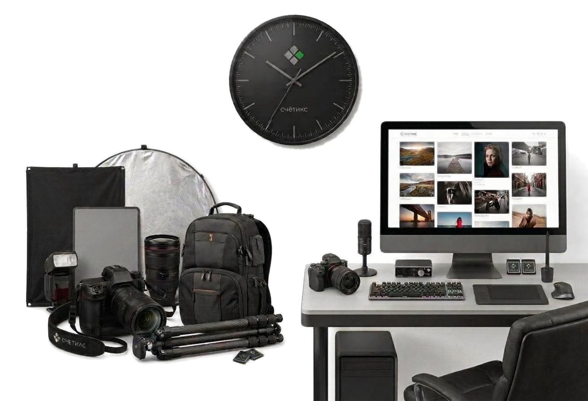
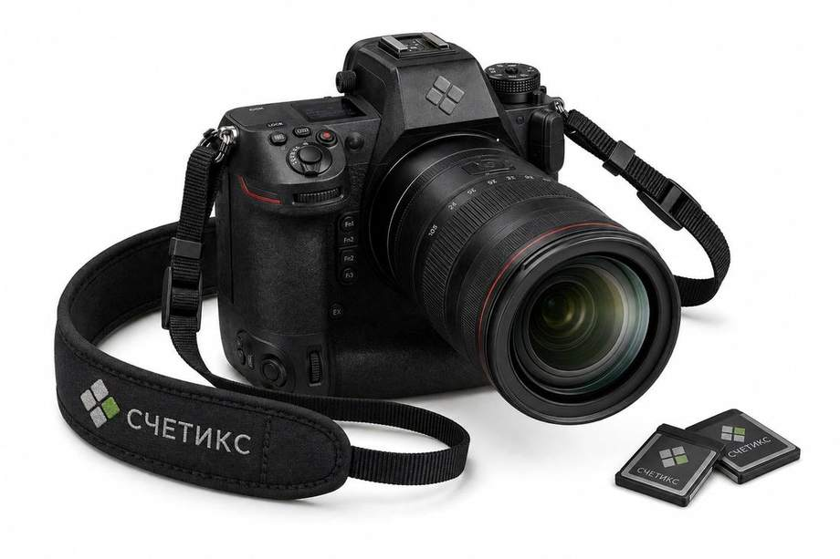

Создано фотографами для фотографов на основе реального опыта.
Все цифры округлены до целых значений, поэтому в расчётах возможны незначительные погрешности. Точные данные без округлений доступны в разделе «Подробная детализация».
Часть рабочего дня, которая уходит на перерывы, личные потребности, отдых, подготовку и обслуживание рабочего места и другие отвлечения, не связанные напрямую с оплачиваемой работой.
Показать ещёВ соответствии с нормами Трудового кодекса Российской Федерации, а также нормами трудового права и методическими рекомендациями по нормированию труда, нормальная продолжительность рабочего времени включает в себя не только время непосредственного выполнения трудовых обязанностей, но и технологические перерывы, регламентированные паузы для отдыха и личных потребностей, обусловленные технологией и организацией труда. Данные затраты времени учитываются при расчете норм труда и рабочего времени, подлежат оплате в составе общей выработки и не могут служить основанием для снижения вознаграждения исполнителя.
Работающим на себя специалистам и фрилансерам критически важно учитывать эти неизбежные временные затраты в своих расчетах. Перенос принципов здорового нормирования труда в собственную практику позволяет объективно оценивать реальные трудозатраты, формировать адекватный и устойчивый прайс и создавать для себя условия работы, которые не уступают, а порой и превосходят гарантии в классическом найме.
Сколько вы зарабатываете каждый месяц по каждому из направлений вашей работы
Непродуктивное время и время, выделенное на форс-мажоры и простой, равномерно распределены между всеми направлениями вашей трудовой деятельности.

Структура вашей рабочей недели на основе введённых данных
| Наименование | За 1 час съёмки | За неделю | За месяц | За год |
|---|---|---|---|---|
| Съёмочных часов | 1 ч | 4,23 ч | 15,42 ч | 185,06 ч |
| Съёмочных проектов | — | 4 проекта | 14 проектов | 175 проектов |
| Обработка | 3 ч | 12,68 ч | 46,26 ч | 555,17 ч |
| Продвижение | 2,37 ч | 10 ч | 36,5 ч | 438 ч |
| Работа с клиентом | 0,95 ч | 4 ч | 14,6 ч | 175,2 ч |
| Учёт | 0,24 ч | 1 ч | 3,65 ч | 43,8 ч |
| Рабочие паузы | 1,18 ч | 5 ч | 18,25 ч | 219 ч |
| Форс-мажоры | 0,26 ч | 1,1 ч | 4,02 ч | 48,18 ч |
| Управление | 0,47 ч | 2 ч | 7,3 ч | 87,6 ч |
Одна и та же загрузка при разной ставке часа. Разница только в цене — и в том, что остаётся вам
Проверим: можно ли выйти на желаемый доход, не поднимая цену для заказчика, — только за счёт объёма работ
Всё ещё хотите просто работать больше? Задайтесь вопросом — зачем.
Объёмом этот разрыв уже не закрыть. Единственный рычаг, который меняет реальность, — это честная цена часа вашей работы.
Базовая ставка — стоимость вашего времени для клиента. В эту ставку уже заложены все сопутствующие расходы и ваш желаемый доход на руки, поэтому её можно смело использовать для любых задач, которые измеряются во времени.
Или просто сформируйте готовый прайс на основе уже введённых данных:
Сформировать прайсПосчитали все режимы на ваших цифрах и показали самый выгодный
| Налоговый режим | Нагрузка | Всего за год | Ставка | Налог / год | Взносы фикс. / год | Взносы +1% / год | Бухгалтерия / год | Порог (макс. ₽/год) | Декларация / год | Отчёты / квартал | КУДиР | Касса | Сотрудники |
|---|---|---|---|---|---|---|---|---|---|---|---|---|---|
| ИП, УСН «Доходы» | 6,0% | 216 639 ₽ | 6% | 126 142 ₽ | 57 390 ₽ | 33 106 ₽ | Нет | 490 500 000 ₽ | Дараз в год | Даавансы по налогу | Даобязательна | Дакасса нужна | Даесли есть — полный комплект |
| ИП, АУСН «Доходы» | 8,0% | 288 851 ₽ | 8% | 288 851 ₽ | Нет | Нет | Нет | 60 000 000 ₽ | Нет | Нет | Нет | Дакасса нужна | Нетсчитает банк |
| ИП, УСН «Доходы минус расходы» | 14,7% | 529 845 ₽ | 15% | 445 739 ₽ | 57 390 ₽ | 26 716 ₽ | Нет | 490 500 000 ₽ | Дараз в год | Даавансы по налогу | Даобязательна | Дакасса нужна | Даесли есть — полный комплект |
| ИП, АУСН «Доходы минус расходы» | 16,9% | 611 140 ₽ | 20% | 611 140 ₽ | Нет | Нет | Нет | 60 000 000 ₽ | Нет | Нет | Нет | Дакасса нужна | Нетсчитает банк |
| Самозанятость (НПД) смешанные заказчики | 5,0% | 180 532 ₽ | 5% | 180 532 ₽ | Нет | Нет | Нет | 2 400 000 ₽ | Нет | Нет | Нет | Нетчек в «Мой налог» | Нельзянанимать на НПД |
| не подходит: ваша выручка 3 610 642 ₽ выше лимита 2 400 000 ₽ | |||||||||||||
Итоговые финансовые возможности и окупаемость техники за весь период эксплуатации с учётом текущей интенсивности работы и выбранной ставки.

Все точные финансовые расчёты, показатели окупаемости и детальную разбивку по вашему графику можно посмотреть в Подробной детализации.
Каждый ваш снимок имеет вполне реальную цену в рублях. Вы платите за него из собственного кармана, как только нажали на спуск затвора.
Так что фактически любая проведённая съёмка никогда не бывает бесплатной — она всегда идёт за ваш счёт, просто эту скрытую плату часто не видите даже вы.
Пригодятся в любом разговоре о деньгах
Когда за ценой виден расчёт, торг сменяется пониманием. Это не мнение — это измеренный эффект
Ваша поддержка помогает нам видеть реальную пользу нашей работы и направлять ресурсы на то, чтобы делать инструмент ещё удобнее для вас.
ПоблагодаритьПостепенное включение стоимости имущества в расходы бизнеса по мере его использования и износа.
Стоимость одного часа работы специалиста при оказании услуг клиенту вне съёмочной площадки, рассчитанная с учётом всех затрат, необходимых для профессиональной деятельности специалиста, включая расходы на оборудование, налоги, обязательные платежи, отпуск и другие предусмотренные расчётом затраты, без повышающего коэффициента, применяемого к съёмочному часу. Используется для формирования стоимости услуг, не связанных непосредственно со съёмкой, например ретуши, индивидуальных консультаций и выполнения индивидуальных задач для клиента.
Расходы на ведение банковских счетов, проведение платежей и использование других банковских услуг, необходимых для профессиональной деятельности.
Период временной нетрудоспособности из-за болезни, травмы или иных обстоятельств, в течение которого человек не может выполнять работу.
Ведение и обработка финансовой информации о деятельности специалиста, включая учёт доходов и расходов, расчёт обязательных платежей и подготовку необходимой отчётности.
План распределения денежных средств за определённый период по направлениям их использования и формирования дохода.
Время, которое специалист затрачивает на выполнение работы, взаимодействие с клиентами, организационные задачи и другие действия, связанные с профессиональной деятельностью.
Время, необходимое для обработки и подготовки отснятого материала к передаче заказчику.
Общая сумма денежных средств, которую специалист затрачивает на покрытие финансовых расходов, налогов и банковских комиссий, связанных с профессиональной деятельностью, за определённый период.
Использование установленного ресурса оборудования, выраженное в количестве предусмотренных производителем операций или циклов работы.
Общая сумма денежных средств, которую специалист получает от продажи своих услуг за определённый период, включая суммы, предназначенные для покрытия всех расходов и обязательных платежей, налогов, стоимости оборудования и его амортизации, банковских расходов, резервов на отпуск, маржинальную прибыль, обучение и другие предусмотренные расчётом затраты, а также доход специалиста.
Дни недели, в которые работник освобождён от выполнения трудовых обязанностей в соответствии с установленным режимом рабочего времени. Предоставляются для еженедельного непрерывного отдыха. По общему правилу при пятидневной рабочей неделе предоставляются два выходных дня, при шестидневной — один.
Календарный период продолжительностью 12 последовательных месяцев, включающий четыре квартала.
Снимки, полученные в результате проведения съёмочных работ и прошедшие первичную обработку.
Процентная часть платежей, полученных специалистом за оказанные услуги в безналичной форме, от общего объёма полученных платежей за определённый период.
Денежные средства, остающиеся у специалиста от профессиональной деятельности после покрытия связанных с этой деятельностью расходов, налогов и обязательных платежей.
Сумма, которую специалист получает на руки за один рабочий час при сравнении с наймом. Считается так: желаемый доход на руки за 11 месяцев делится на рабочее время — рабочие дни, умноженные на восемь часов.
Сумма денежных средств, остающаяся у специалиста после вычета налогов, обязательных платежей и других предусмотренных расходов.
Стоимость одного часа съёмки, которая позволяет специалисту получать желаемый доход.
Сумма денежных средств, которую специалист планирует получать на руки от своей профессиональной деятельности после покрытия всех расходов, налогов и обязательных платежей ежемесячно в течение года, включая периоды оплачиваемого отпуска.
Доля рабочего времени специалиста, фактически занятая выполнением оплачиваемой работы, от общего доступного рабочего времени за определённый период.
Часть стоимости услуги, заранее заложенная в цену для возможности предоставить клиенту скидку без снижения планируемого дохода специалиста.
Заранее установленное значение параметра, которое используется автоматически, если пользователь не указал другое значение.
Степень физического и эксплуатационного старения камеры в результате её использования, выраженная в снижении остаточного ресурса и необходимости последующей замены или ремонта.
Время, которое специалист дополнительно вкладывает в развитие, создание или улучшение ресурсов своего бизнеса и которое рассматривается как инвестиция, способная в дальнейшем приносить экономическую отдачу. Затраты такого времени могут учитываться в стоимости деятельности специалиста и компенсироваться за счёт будущих доходов. Примеры: обучение и повышение квалификации, освоение нового оборудования или технологий, ремонт и переоборудование студии, разработка новых услуг, создание рабочих инструментов и другие вложения времени, направленные на развитие бизнеса. В Счётикс инвестиционное время учитывается отдельно от годового рабочего времени, не имеет единой суммы в часах и компенсируется через денежный расчёт соответствующих вложений.
Календарный период продолжительностью три последовательных месяца. Календарный год состоит из четырёх кварталов.
Время, затрачиваемое специалистом на привлечение, коммуникацию и сопровождение клиента на всех этапах взаимодействия.
Совокупность временных и денежных затрат специалиста, связанных с перемещением к месту выполнения работы и обратно, а также с перевозкой необходимых для работы оборудования и материалов. В Счётикс логистика вынесена за пределы расчёта базовой стоимости рабочего часа. Затраты на дорогу, проезд, топливо, парковку и другое перемещение специалист учитывает самостоятельно при формировании стоимости конкретного проекта с учётом фактических условий работы.
Календарный период продолжительностью от 28 до 31 календарного дня, имеющий наименование и порядковый номер в году.
Точка безубыточности в натуральном выражении. Объём реализации в натуральных единицах, при котором выручка покрывает все предусмотренные расчётом затраты, а доход специалиста равен нулю. Для фотографа показатель может выражаться в количестве съёмочных проектов, необходимых для достижения точки безубыточности за выбранный период.
Минимальное количество часов съёмки, которое специалист принимает в рамках одного заказа и ниже которого не выполняет заказ на установленных условиях.
Обязательные платежи в бюджет, начисляемые и уплачиваемые специалистом в соответствии с применяемым налоговым режимом и законодательством Российской Федерации.
Установленный законодательством порядок исчисления и уплаты налогов и обязательных платежей, применяемый специалистом в зависимости от выбранной системы налогообложения.
Процентное или денежное увеличение себестоимости услуги, формирующее дополнительную сумму сверх затрат и обеспечивающее получение прибыли.
Часть рабочего времени, затрачиваемая на действия и перерывы, не связанные непосредственно с выполнением основной оплачиваемой работы, включая личные потребности, отдых, обслуживание рабочего места, внутренние коммуникации и другие отвлечения. Используется в Счётикс для учёта времени, которое фактически не может быть использовано для выполнения оплачиваемой работы.
Затраты на создание и оснащение пространства, необходимого специалисту для выполнения профессиональной деятельности.
Затраты на получение и поддержание знаний, навыков и профессиональных компетенций, необходимых для выполнения работы и развития специалиста.
Время, затрачиваемое специалистом на выполнение рабочих задач, не связанных непосредственно с оказанием услуги или созданием результата для клиента, но необходимых для организации и ведения профессиональной деятельности. Включает продвижение и рекламу, поиск заказов, работу с клиентами, бухгалтерию и учёт, планирование, организационные и административные задачи.
Время, которое специалист затрачивает на коммуникацию с потенциальными и действующими клиентами вне рамок конкретного проекта, включая обработку обращений, ответы на вопросы, консультации, переписку, переговоры и другие действия, связанные с привлечением и обслуживанием клиентов.
Неиспользованная часть рабочего ресурса оборудования, которую специалист может использовать до достижения установленного срока службы или предельного количества операций.
Ежегодный период освобождения от работы для отдыха и восстановления, на время которого специалист предусматривает сохранение дохода. Основная продолжительность ежегодного оплачиваемого отпуска составляет 28 календарных дней.
Систематизированная информация о доходах, расходах, результатах деятельности и обязательствах специалиста, подготовленная за определённый период для анализа, контроля или предоставления в налоговые и иные соответствующие органы в установленных случаях.
Оборудование и технические средства, используемые для организации рабочего процесса, выполнения административных задач и обеспечения повседневной деятельности специалиста.
Комплекс действий с отснятым фотоматериалом, выполняемых специалистом с использованием специализированных компьютерных программ для подготовки материала к дальнейшему использованию. Включает подготовку материала: создание и организацию папок и файлов, выгрузку материала с карт памяти, резервное копирование; отбор материала: просмотр отснятого материала, удаление технического брака, отбор удачных кадров, исключение дублей, кадров с закрытыми глазами и явно неудачных кадров; базовую цветокоррекцию: коррекцию экспозиции, баланса белого, контраста, светлых и тёмных областей, резкости и насыщенности, приведение всей серии к единому цвету и свету; коррекцию кадра: кадрирование, выравнивание горизонта, коррекцию перспективы и искажений объектива, удаление крупных лишних объектов из кадра; подготовку и передачу результата: импорт и экспорт из программы обработки, подготовку файлов, изменение размера и формата при необходимости. Ретушь в первичную обработку не входит.
Программное обеспечение, используемое специалистом для выполнения профессиональных задач, обработки материалов и организации рабочего процесса.
Документ, подтверждающий право его владельца получить определённую услугу или набор услуг на указанную в сертификате сумму или в соответствии с установленными условиями.
Регулярные платежи за доступ к программам, сервисам, платформам и другим цифровым инструментам, необходимым специалисту для работы.
Действия специалиста по выявлению потенциальных клиентов и получению новых заказов на оказание услуг.
Комплекс работ с отснятым материалом после завершения съёмки, направленных на его обработку, доработку и подготовку к передаче или публикации.
Дни, в которые в соответствии с Трудовым кодексом Российской Федерации работник освобождён от исполнения трудовых обязанностей; конкретные даты выходных и нерабочих праздничных дней и их переносы определяются с учётом производственного календаря.
Перечень услуг с указанием их стоимости и, при необходимости, основных условий их предоставления.
Система условий и поощрений, направленная на привлечение и удержание клиентов и стимулирование их повторных покупок или заказов.
Комплекс действий, направленных на привлечение внимания к специалисту, его услугам или продуктам, увеличение числа потенциальных клиентов и стимулирование продаж.
Время, затрачиваемое специалистом непосредственно на проведение съёмочных работ, от начала до завершения съёмки.
Рабочие действия специалиста, связанные с взаимодействием с клиентом в рамках конкретного проекта: обсуждение задачи, согласование условий и деталей работы, подготовка к проекту, коммуникация в процессе его выполнения, согласование результата и завершение проекта.
Общее время, которое специалист затрачивает на выполнение всех съёмочных проектов в течение определённого периода, включая съёмочное время, время на постпродакшн и проектное клиентское время.
Время, затрачиваемое специалистом на взаимодействие с клиентом в рамках конкретного проекта.
Расходы, непосредственно связанные с выполнением конкретного заказа или проекта и возникающие в процессе оказания услуги.
Это та часть ваших финансовых затрат, которая напрямую участвует в создании и обработке фотографий: съёмочное и офисное оборудование, рабочий софт, подписки, а также содержание студии или рабочего места. Сюда не входят расходы на маркетинг, рекламу, сайт, обучение или бухгалтерское сопровождение — только то, что работает непосредственно на создание снимка.
Совокупность рабочих действий специалиста, связанных с привлечением, коммуникацией и сопровождением клиентов на разных этапах взаимодействия.
Время, в течение которого специалист выполняет профессиональные обязанности, включая непосредственную работу, подготовку, организационные задачи и другие действия, связанные с выполнением работы. Нормальная продолжительность рабочего времени не может превышать 40 часов в неделю.
Организованное пространство специалиста, оснащённое необходимым оборудованием, инструментами и материалами для выполнения конкретных профессиональных задач.
Всё, что специалист затрачивает для выполнения работы и ведения профессиональной деятельности, включая время и денежные средства.
Расходы, возникающие регулярно и необходимые для поддержания профессиональной деятельности и выполнения работы в течение определённого периода.
Дополнительный запас рабочего времени, предусмотренный в расчёте для компенсации периодов отсутствия заказов, отмены или переноса съёмок, а также непредвиденных обстоятельств, временно влияющих на возможность специалиста работать. Дополнительный резерв, может быть отключён.
Часть денежных средств, включаемая в стоимость каждого часа работы и предназначенная для сохранения дохода специалиста в период оплачиваемого отпуска. Обязательный резерв.
Часть денежных средств, закладываемая в стоимость услуг для финансирования скидок, бонусов и других мероприятий программы лояльности. Дополнительный резерв, может быть отключён.
Короткое название маржинальной прибыли в таблицах и расчётах: деньги дела сверх зарплаты и расходов.
Денежные средства, которые специалист заранее закладывает в стоимость своих услуг и накапливает для последующего использования в соответствии с предусмотренными целями.
Распространение информации о специалисте, его услугах или продуктах с целью привлечения внимания потенциальных клиентов и стимулирования спроса.
Расчётное количество срабатываний затвора камеры, которое предусмотрено производителем до достижения установленного уровня его эксплуатационного ресурса.
Интернет-ресурс, предназначенный для представления специалиста, его услуг и портфолио, информирования потенциальных клиентов, привлечения обращений и получения заказов.
Сумма затрат, необходимых специалисту для проведения одного съёмочного часа, включая прямые и распределённые расходы, связанные с выполнением съёмочных работ.
Снижение стоимости единицы услуги при увеличении объёма заказа или количества приобретаемых услуг.
Расходы на поддержание рабочего пространства и оборудования в состоянии, необходимом для регулярного выполнения профессиональной деятельности.
Однократный цикл работы затвора камеры, происходящий при создании снимка и учитываемый при определении выработки ресурса затвора.
Средняя стоимость одной съёмки, рассчитанная на основе общей выручки от съёмок и их количества за определённый период.
Период, в течение которого оборудование или другое имущество может использоваться по назначению при соблюдении установленных условий эксплуатации.
Минимальная стоимость съёмочного часа, при которой специалист достигает точки безубыточности, то есть получает выручку, достаточную для покрытия предусмотренных расчётом расходов и обязательных платежей, но не получает дохода сверх них.
Стоимость одного часа съёмочных работ, установленная специалистом для клиента.
Отдельное направление денежных поступлений, предусмотренное бюджетом специалиста.
Отдельное направление денежных затрат, предусмотренное бюджетом специалиста.
Обязательные платежи в государственные внебюджетные фонды и государственные системы страхования, связанные с осуществлением профессиональной деятельности и обеспечением социальных гарантий.
Процесс создания фотоматериала с использованием фотооборудования в соответствии с поставленной задачей, условиями и сценарием съёмочного проекта.
Время, непосредственно затрачиваемое специалистом на проведение съёмки на съёмочной площадке.
Неизменный рабочий комплект оборудования, который фотограф использует на каждой съёмке и без которого проведение съёмочного процесса невозможно или существенно затруднено. Узкоспециализированное оборудование для разовых или нестандартных проектов в основной комплект не входит и учитывается отдельно в зависимости от конкретных задач.
Отдельный проект, предусматривающий выполнение съёмочных работ для клиента и включающий все связанные с ним процессы — подготовку, коммуникацию, съёмку, пост-продакшн и завершение проекта. Сокращённо может называться съёмкой.
Единица измерения съёмочного времени, равная одному часу работы специалиста на съёмочной площадке.
Стоимость одного часа работы фотографа на съёмочной площадке, по которой он в настоящее время оказывает услуги клиентам.
Сумма денежных средств, которую специалист может получать на руки при текущей ставке и условиях профессиональной деятельности, указанных в анкете, после покрытия всех расходов, налогов и обязательных платежей.
Минимальный объём выручки или продаж за определённый период, необходимый для покрытия всех предусмотренных расчётом расходов, налогов и обязательных платежей без получения дополнительного дохода. Может выражаться в денежных единицах, количестве съёмок, съёмочных часах или других единицах объёма деятельности.
Основной нормативный правовой акт, регулирующий трудовые отношения в Российской Федерации и устанавливающий государственные гарантии в сфере труда, включая нормы рабочего времени, отдыха, отпусков и других условий труда. В расчёте используется как общепринятая нормативная точка отсчёта для определения объёма рабочего времени и базовых условий труда специалиста.
Систематический сбор, фиксация и анализ информации о доходах, расходах, работе и других показателях профессиональной деятельности.
Денежные средства, которые специалист вкладывает в развитие и обеспечение своей профессиональной деятельности и рассчитывает использовать с целью получения будущей отдачи.
Денежные средства, которые специалист затрачивает на выполнение работы и обеспечение профессиональной деятельности.
Сформированная сумма денежных средств, предназначенная для финансирования скидок, бонусов, подарков и других поощрений клиентов в рамках программы лояльности.
Деньги дела сверх зарплаты, расходов и налогов — доля выручки, заранее заложенная в ставку. Направляются на развитие (оборудование, обучение, продвижение) или становятся доходом специалиста. Дополнительный элемент цены, может быть отключён.
Комиссия за приём безналичных платежей от клиентов с использованием банковских карт, электронных средств платежа и других платёжных инструментов.
Время рабочего дня, фактически доступное для выполнения профессиональных задач после учёта объективно необходимых перерывов на отдых, личные потребности, восстановление работоспособности, подготовку и обслуживание рабочего места. Такие затраты времени являются естественной частью организации труда и учитываются при нормировании рабочей нагрузки.
Расчёт доходов, расходов и финансового результата в расчёте на одну единицу деятельности специалиста, например один час работы, одну услугу, один заказ или один съёмочный проект. Позволяет определить реальную стоимость выполнения работы, понять, сколько специалист зарабатывает после покрытия всех связанных с деятельностью затрат, определить необходимую стоимость услуг и оценить экономическую эффективность своей работы.
| № | Наименование | /год | /мес | /нед | /день | /проект | Код | |
|---|---|---|---|---|---|---|---|---|
| 01 | Календарных дней / год | 365 дн | 30,42 дн | 7 дн | — | — | 0 | |
| 02 | Выходные дни | 104 дн | 8,67 дн | 2 дн | — | — | 0 | |
| 03 | Праздничные дни | 14 дн | — | — | — | — | 0 | |
| 04 | Рабочих дней / год | 247 дн | 20,58 дн | 4,75 дн | — | — | 0 | |
| 05 | Отпуск | 28 дн | — | — | — | — | 0 | |
| 06 | Больничные | 10 дн | — | — | — | — | 0 | |
| 07 | Рабочих дней без отпуска и больничных | 219 дн | 18,25 дн | 5 дн | — | — | Р | |
| 08 | Рабочих часов / день | 8 ч | — | — | — | — | 0 | |
| 09 | Эффективных часов / день | 7 ч | — | — | — | — | 0 | |
| 10 | Рабочее время | 1 752 ч | 146 ч | 40 ч | 8 ч | — | Р | |
| 11 | Эффективное рабочее время | 1 533 ч | 127,75 ч | 35 ч | 7 ч | — | Р | |
| 12 | Время на поиск заказов | 438 ч | 36,5 ч | 10 ч | 2 ч | — | А | |
| 13 | Время на бухгалтерию и учёт | 43,8 ч | 3,65 ч | 1 ч | 0,2 ч | — | А | |
| 14 | Резерв времени на простой и форс-мажоры | 48,18 ч | 4,02 ч | 1,1 ч | 0,22 ч | — | А | |
| 15 | Проектное время | 915,42 ч | 76,29 ч | 20,9 ч | 4,18 ч | 5,23 ч | Р | |
| 16 | Время на съёмку | 185,06 ч | 15,42 ч | 4,23 ч | 0,85 ч | 1 ч | А | |
| 17 | Время на постпродакшн | 555,17 ч | 46,26 ч | 12,68 ч | 2,53 ч | 3 ч | А | |
| 18 | Проектная работа с клиентами | 175,2 ч | 14,6 ч | 4 ч | 0,8 ч | 1 ч | А | |
| 19 | Проектов | 175,2 шт | 14,6 шт | 4 шт | 0,8 шт | — | Р |
| № | Наименование | ₽/год | ₽/мес | ₽/проект | ₽/час съёмки | % расходов | Код | |
|---|---|---|---|---|---|---|---|---|
| 01 | Подписки / ПО | 27 000,00 ₽ | 2 250,00 ₽ | 154,11 ₽ | 145,90 ₽ | 3,5 % | Р | |
| 02 | Реклама и продвижение | 187 500,00 ₽ | 15 625,00 ₽ | 1 070,21 ₽ | 1 013,21 ₽ | 24,3 % | Р | |
| 03 | Содержание рабочего места | 67 680,00 ₽ | 5 640,00 ₽ | 386,30 ₽ | 365,73 ₽ | 8,77 % | Р | |
| 04 | Банковское обслуживание | 1 800,00 ₽ | 150,00 ₽ | 10,27 ₽ | 9,73 ₽ | 0,23 % | Р | |
| 05 | Бухгалтерия и учёт | 0,00 ₽ | 0,00 ₽ | 0,00 ₽ | 0,00 ₽ | 0 % | Р | |
| 06 | Регулярные расходы специалиста | 283 980,00 ₽ | 23 665,00 ₽ | 1 620,89 ₽ | 1 534,57 ₽ | 36,8 % | Р | |
| 07 | Налоги | 216 638,53 ₽ | 18 053,21 ₽ | 1 236,52 ₽ | 1 170,67 ₽ | 28,08 % | Р | |
| 08 | Страховые взносы | 0,00 ₽ | 0,00 ₽ | 0,00 ₽ | 0,00 ₽ | 0 % | Р | |
| 09 | Эквайринг | 97 487,34 ₽ | 8 123,94 ₽ | 556,43 ₽ | 526,80 ₽ | 12,63 % | Р | |
| 10 | Всего отчислений | 314 125,87 ₽ | 26 177,16 ₽ | 1 792,96 ₽ | 1 697,47 ₽ | 40,71 % | Р | |
| 11 | Всего расходов | 771 580,43 ₽ | 64 298,37 ₽ | 4 404,00 ₽ | 4 169,47 ₽ | 100 % | Р |
| № | Наименование | ₽/год | ₽/мес | ₽/проект | ₽/час съёмки | % вложений | Код | |
|---|---|---|---|---|---|---|---|---|
| 01 | Амортизация фотокамеры | 41 749,75 ₽ | 3 479,15 ₽ | 238,30 ₽ | 225,61 ₽ | 24,07 % | Р | |
| 02 | Амортизация съёмочного оборудования | 42 706,17 ₽ | 3 558,85 ₽ | 243,76 ₽ | 230,78 ₽ | 24,62 % | Р | |
| 03 | Амортизация офисного оборудования | 65 732,93 ₽ | 5 477,74 ₽ | 375,19 ₽ | 355,21 ₽ | 37,89 % | Р | |
| 04 | Амортизация ПО | 11 500,00 ₽ | 958,33 ₽ | 65,64 ₽ | 62,14 ₽ | 6,63 % | Р | |
| 05 | Амортизация рабочего места | 11 785,71 ₽ | 982,14 ₽ | 67,27 ₽ | 63,69 ₽ | 6,79 % | Р | |
| 06 | Амортизация обучения и курсов | 0,00 ₽ | 0,00 ₽ | 0,00 ₽ | 0,00 ₽ | 0 % | Р | |
| 07 | Амортизация сайта | 0,00 ₽ | 0,00 ₽ | 0,00 ₽ | 0,00 ₽ | 0 % | Р | |
| 08 | Финансовые вложения (инвестиции) | 173 474,57 ₽ | 14 456,21 ₽ | 990,15 ₽ | 937,42 ₽ | 100 % | Р |
| № | Наименование | ₽/год | ₽/мес | ₽/проект | ₽/час съёмки | % фонда | Код | |
|---|---|---|---|---|---|---|---|---|
| 01 | Резерв на отпуск | 110 216,00 ₽ | 9 184,67 ₽ | 629,09 ₽ | 595,59 ₽ | 10,88 % | Р | |
| 02 | Запас на скидку | 541 596,32 ₽ | 45 133,03 ₽ | 3 091,30 ₽ | 2 926,68 ₽ | 53,47 % | Р | |
| 03 | Буфер ликвидности | 361 064,21 ₽ | 30 088,68 ₽ | 2 060,87 ₽ | 1 951,12 ₽ | 35,65 % | Р | |
| 04 | Резервный фонд | 1 012 876,53 ₽ | 84 406,38 ₽ | 5 781,26 ₽ | 5 473,38 ₽ | 100 % | Р |
| № | Наименование | Текущая | Желаемая | В ноль | Код | |
|---|---|---|---|---|---|---|
| 01 | Ставка / час съёмки | 6 000,00 ₽ | 19 511,18 ₽ | 2 872,18 ₽ | Р | |
| 02 | Стоимость / 1 проект | 6 337,50 ₽ | 20 608,69 ₽ | 3 033,74 ₽ | Р | |
| 03 | Стоимость / 1 готовый кадр | 75,00 ₽ | 243,89 ₽ | 35,90 ₽ | Р | |
| 04 | Желаемый доход / год | 1 322 592,00 ₽ | 1 322 592,00 ₽ | 1 322 592,00 ₽ | Р | |
| 05 | Выручка / год | 1 110 330,00 ₽ | 3 610 642,13 ₽ | 531 510,46 ₽ | Р | |
| 06 | Выручка / мес | 92 527,50 ₽ | 300 886,84 ₽ | 44 292,54 ₽ | Р | |
| 07 | Регулярные расходы специалиста / год | 283 980,00 ₽ | 283 980,00 ₽ | 283 980,00 ₽ | Р | |
| 08 | Финансовые вложения (инвестиции) / год | 173 474,57 ₽ | 173 474,57 ₽ | 173 474,57 ₽ | Р | |
| 09 | Резервный фонд / год | 1 012 876,53 ₽ | 1 012 876,53 ₽ | 1 012 876,53 ₽ | Р | |
| 10 | Налоги и Страховые взносы / год | 66 619,80 ₽ | 216 638,53 ₽ | 59 705,10 ₽ | Р | |
| 11 | Эквайринг и дополнительные банковские комиссии / год | 29 978,91 ₽ | 97 487,34 ₽ | 14 350,78 ₽ | Р | |
| 12 | Остаётся на руки / год | 89 938,12 ₽ | 2 839 061,69 ₽ | 0,00 ₽ | Р | |
| 13 | Остаётся на руки / мес | 7 494,84 ₽ | 236 588,47 ₽ | 0,00 ₽ | Р | |
| 14 | Остаётся на руки / час съёмки | 486,01 ₽ | 15 341,72 ₽ | 0,00 ₽ | Р | |
| 15 | Доход в час на руки | 47,06 ₽ | 1 485,43 ₽ | 0,00 ₽ | Р | |
| 16 | Базовая ставка | 724,29 ₽ | 2 355,28 ₽ | 346,71 ₽ | Р | |
| 17 | Остаётся на руки / % выручки | 8,1 % | 78,63 % | 0 % | Р | |
| 18 | Себестоимость / час съёмки | 5 513,99 ₽ | 4 169,47 ₽ | 2 872,18 ₽ | Р | |
| 19 | Наценка к себестоимости | 8,81 % | 367,95 % | 0 % | Р | |
| 20 | Разница с желаемым доходом | −1 232 653,88 ₽ | 1 516 469,69 ₽ | −1 322 592,00 ₽ | Р | |
| 21 | Запас выручки до точки безубыточности | 52,13 % | — | — | Р | |
| Чтобы получить тот же доход при выбранной ставке часа | ||||||
| 22 | Съёмок / год | 569,73 шт | 175,2 шт | 1 190,16 шт | Р | |
| 23 | Съёмок / мес | 47,48 шт | 14,6 шт | 99,18 шт | Р | |
| 24 | Съёмок / нед | 13,01 шт | 4 шт | 27,17 шт | Р | |
| 25 | Рабочего времени / год | 3 594,4 ч | 1 533 ч | 6 836,19 ч | Р | |
| 26 | Рабочих дней / год | 513,49 дн | 219 дн | 976,6 дн | Р | |
| 27 | Рабочих дней / мес | 42,79 дн | 18,25 дн | 81,38 дн | Р | |
| 28 | Рабочих дней / нед | 11,72 дн | 5 дн | 22,3 дн | Р | |
| 29 | Праздников, выходных и больничных / дней | 0 дн | 146 дн | 0 дн | Р | |
| Загрузка, чтобы получить тот же доход при стандартных условиях | ||||||
| 30 | Рабочий день / часов | 16,41 ч | 7 ч | 31,22 ч | Р | |
| 31 | Съёмок / рабочий день | 2,6 шт | 0,8 шт | 5,43 шт | Р | |
| № | Наименование | /съёмка | /мес | /год | Код | |
|---|---|---|---|---|---|---|
| 01 | Срабатываний затвора | 350 шт | 5 397,44 шт | 64 769,25 шт | Р | |
| 02 | Выработка ресурса | 0,117 % | 1,8 % | 21,59 % | Р | |
| 03 | Износ камеры | 225,61 ₽ | 3 479,15 ₽ | 41 749,75 ₽ | Р |
| № | Наименование | Значение | Код | |
|---|---|---|---|---|
| 01 | Срабатываний / 1 готовый кадр | 4,38 шт | Р | |
| 02 | Стоимость / 1 срабатывание | 0,64 ₽ | Р | |
| 03 | Срок службы при текущих условиях | 4,63 лет | Р |
| № | Наименование | Значение | Код | |
|---|---|---|---|---|
| 01 | Съёмок | 700,8 шт | Р | |
| 02 | Срабатываний затвора | 259 077 шт | Р | |
| 03 | Выработка ресурса | 86,36 % | Р | |
| 04 | Остаток ресурса | 13,64 % | Р |
| № | Наименование | Стоимость | Цена / час | Готовых кадров | Цена / 1 кадр | Код | |
|---|---|---|---|---|---|---|---|
| 01 | Съёмка 1 час | 19 721,23 ₽ | 19 721,23 ₽ | 80 шт | 246,52 ₽ | Р | |
| 02 | Съёмка 2 часа | 35 498,22 ₽ | 17 749,11 ₽ | 160 шт | 221,86 ₽ | Р | |
| 03 | Съёмка 3 часа | 51 275,20 ₽ | 17 091,73 ₽ | 240 шт | 213,65 ₽ | Р | |
| 04 | Съёмка 4 часа | 67 052,19 ₽ | 16 763,05 ₽ | 320 шт | 209,54 ₽ | Р | |
| 05 | Съёмка 6 часов | 98 606,16 ₽ | 16 434,36 ₽ | 480 шт | 205,43 ₽ | Р | |
| 06 | Съёмка 8 часов | 130 160,13 ₽ | 16 270,02 ₽ | 640 шт | 203,38 ₽ | Р |
| № | Наименование | ₽/год | ₽/мес | ₽/проект | Доля фонда | Код | |
|---|---|---|---|---|---|---|---|
| 01 | Запас на скидку | 15 % | — | — | — | А | |
| 02 | Фонд программы лояльности | 541 596,00 ₽ | 45 133,00 ₽ | 3 091,30 ₽ | 100 % | Р | |
| 03 | Средний чек съёмки | 19 800,00 ₽ | — | — | — | Р | |
| Как можно распределить фонд — наш пример, решать вам | |||||||
| 04 | Скидка за объём | 333 076,00 ₽ | 27 756,33 ₽ | 1 901,12 ₽ | 61,5 % | Р | |
| 05 | Постоянным клиентам | 47 520,00 ₽ | 3 960,00 ₽ | 271,23 ₽ | 8,77 % | Р | |
| 06 | Специальные предложения | 161 000,00 ₽ | 13 416,67 ₽ | 918,95 ₽ | 29,73 % | Р | |
| Ступени для постоянных клиентов | |||||||
| 07 | Скидка 5 % · от 2 съёмок | 19 800,00 ₽ | — | 10 шт клиентов | 3,66 % | Р | |
| 08 | Скидка 7 % · от 4 съёмок | 27 720,00 ₽ | — | 5 шт клиентов | 5,12 % | Р | |
| 09 | Скидка 10 % · от 12 съёмок | 0,00 ₽ | — | 0 шт клиентов | 0 % | Р | |
| Сертификаты | |||||||
| 10 | Сертификат 17 000 ₽ | 17 000,00 ₽ | — | 1 шт | 3,14 % | Р | |
| 11 | Сертификат 8 000 ₽ | 64 000,00 ₽ | — | 8 шт | 11,82 % | Р | |
| 12 | Сертификат 5 000 ₽ | 80 000,00 ₽ | — | 16 шт | 14,77 % | Р | |
Сейчас СЧЁТИКС доступен бесплатно: мы тестируем сам сервис, его работу и возможности в реальных условиях.
Все расчёты уже работают в полном объёме и построены на реалистичной экономической модели.
Если вы заметили неточность или у вас есть идея, как сделать СЧЁТИКС полезнее — напишите нам: [email protected]
Ваша поддержка помогает нам развивать сервис и сохранять его доступным для всех независимых специалистов.